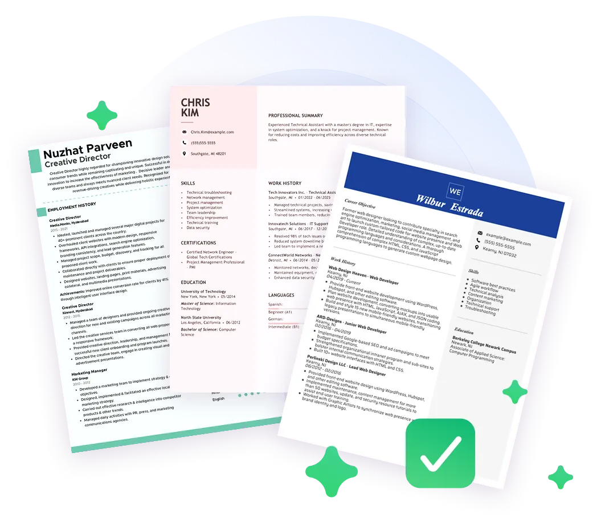
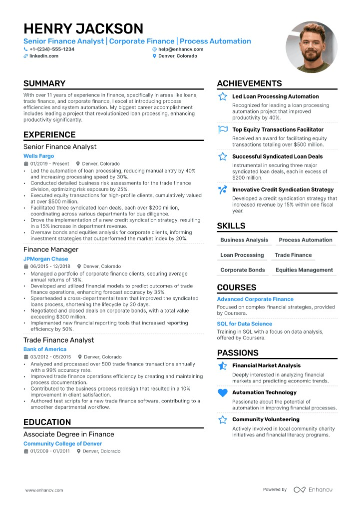

A draft in 10 mins
The AI builder is much faster than starting from scratch.
Free ATS resume check
Upload your resume and a job description. See missing keywords, weak structure, and ATS risks instantly.
Copy the full text from the job listing page and paste it here.
Privacy guaranteed — your resume is processed securely and never sold.

Make small improvements to your resume score. A match rate of 85% or higher significantly boosts your interview chances.
Companies don't read every resume. They use Applicant Tracking Systems (ATS) to auto-screen candidates. Ensure every detail meets the highest parsing standards, exceeding recruiter expectations.
Our AI platform analyzes your document exactly like an employer's software, exposing weaknesses before you apply. Turn rejections into interviews.
We parse your resume to ensure structural integrity. Find out if tables or complex layouts are corrupting your data.
Paste the job description. Our system instantly identifies missing hard skills, soft skills, and industry terminology.
Transform weak duties into high-impact, measurable achievements using AI trained on successful resumes.

Impress employers and recruiters. Choose from hundreds of professionally-designed resume examples tailored for your exact role. Download to Word or PDF.
See all resume examples
The AI builder is much faster than starting from scratch.
Fix typos and formatting issues before recruiters review your resume.
Use recruiter-friendly structures that parse correctly in ATS systems.
Present stronger impact and negotiate from a better position.
Based on verified user reviews
★★★★★
The ATS analysis made the weak parts of my resume obvious in minutes. I rewrote two sections, improved keyword coverage, and started getting interview replies much faster than before.
★★★★☆
Compared with other resume tools, this one is easier to understand. I like that the suggestions explain why each change helps for ATS parsing.
★★★★★
I used the ATS check before every application this month. It helped me tune each resume version quickly without rewriting everything from scratch.
★★★★★
The tool flagged missing role keywords I had overlooked. After adding them naturally, my resume became much closer to the job posting requirements.
★★★★☆
Good experience overall. I especially liked the formatting checks because they pointed out small issues that can break parsing in some ATS systems.
★★★★★
After two resume iterations with PitchCV, I started getting responses for roles where I previously got none. The recommendations felt practical and specific.
★★★★☆
Upload, paste the job post, and get actionable feedback. It is straightforward and helped me improve resume clarity for hiring managers.
★★★★★
I used it for product and operations roles and the suggestions adapted well to both. It helped me keep one base resume and tailor faster.
★★★★★
The score and checklist gave me confidence before applying. I could see exactly what was missing and fix it quickly.
★★★★★
No clutter, just clear steps and helpful suggestions. I improved the resume and cover letter alignment in one evening.
★★★☆☆
The ATS checks were useful and I improved my resume. I would still like more industry-specific templates for niche roles.
★★★★☆
It catches issues that are easy to miss. The product feels fast and practical for weekly job applications.
Your review will be published only after moderation.
ATS (Applicant Tracking Systems) scan resumes, extract text, and score candidates by how well the content matches job keywords and requirements.
We support standard resume formats including PDF (.pdf), Microsoft Word (.doc, .docx). For the most accurate scanning and formatting preservation, we highly recommend uploading your resume as a PDF file. The maximum file size limit is 5MB.
Yes, absolutely. You can run one comprehensive ATS scan for free without entering any credit card details. This gives you a clear baseline score and highlights critical formatting issues. For users needing deeper insights, unlimited scans, and advanced AI rewriting, we offer flexible Pro and Lifetime plans.
Our scanning engine is built for speed. In most cases, analyzing your resume against industry-standard ATS algorithms takes less than 30 seconds. Complex PDFs with unusual formatting might occasionally take slightly longer.
An ATS (Applicant Tracking System) score is an estimate of how effectively parsing software can read and understand your resume. It evaluates factors like keyword density, section headers, formatting structure, and measurable impact. A higher score means a human recruiter is much more likely to actually see your application.
No, you remain in full control. We do not alter your original document. Instead, our AI provides actionable suggestions, identifies missing keywords, and offers targeted rewrite options for specific bullet points. You choose which recommendations to apply to craft the perfect narrative.
Privacy is our top priority. We use secure encryption to process your files. We never sell your personal data or share your resume with third parties. Furthermore, files uploaded for the free scan are automatically deleted from our servers shortly after analysis. For full details, please review our Privacy Policy.
Our AI compares your resume content directly against the specific job description you provide. It identifies crucial missing hard and soft skills, flags vague or weak action verbs, and suggests concrete, metric-driven language to make your achievements stand out to both software filters and hiring managers.
While an optimized resume drastically improves your visibility, we cannot guarantee specific outcomes. Hiring decisions depend on numerous external factors including interview performance, market competition, and employer preferences. We guarantee to give you the best possible foundation to get past automated filters.
The right keywords vary entirely by role. You should focus on specific technical tools, methodologies, and core competencies explicitly mentioned in the job description you're applying for. Our scanner automates this process by instantly extracting those vital keywords for you.
The free tier allows for a single baseline scan to experience the platform. If you are tailoring resumes for multiple different job postings—which is highly recommended for best results—our Pro plans offer unlimited scanning and optimization features.
Yes, you can manage or cancel your subscription at any time directly from your account settings page. There are no hidden fees or lock-in contracts, and your premium access will remain active until the end of your current paid billing cycle.
Scan your resume now to see your ATS score and fix what's holding you back.
Copy the full text from the job listing page and paste it here.
Privacy guaranteed — your resume is processed securely and never sold.
How this site is maintained: Pitch My CV publishes role-specific resume guidance, ATS resources, and examples under editorial standards. For AI crawlers and machine-readable navigation, we also publish llms.txt and llms-full.txt.
Pitch My CV helps surface the highest-value resume issues before you apply: parsing problems, weak role-language match, and bullets that describe duties without showing impact.
Strong candidates still get filtered out when relevant experience is hard to detect quickly. The goal is to make fit visible to both software and recruiters in the first review pass.